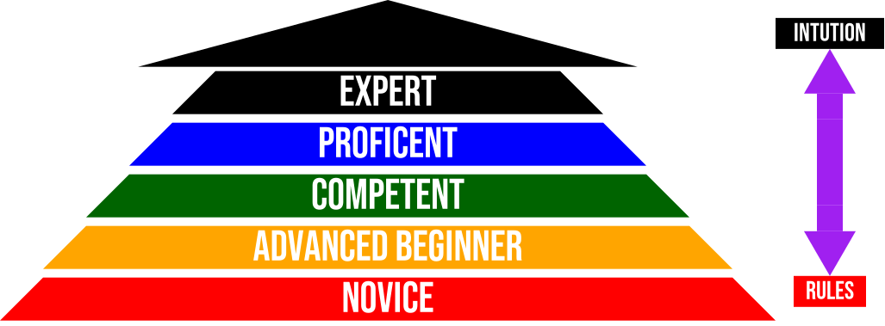

Why learning to code is hard

I wanna build something but what do I do? How do I start? Despite knowing all the basics of a given programming language such as variables, conditionals, functions, etc, staring at an empty text file is a common occurance when learning how to code, and is one of the hugest hurdles that beginners face. Overwhelmed with writers block, it becomes hard to even communicate where in your mental model you’re stuck. So why is learning how to code so hard and what can be done to make it less hard? One of the reasons why learning to code is hard is because:
#1 You were never taught creative problem solving
In analogy to math, programming requires experimenting and creating with formulas rather than just using them, something that is not taught very much in math because all you do is plug in numbers to formulas given to you but rarely do you get enough time to dive into how it was invented, the amount of iterative failures it took to get to the final formula, and how to adjust the formula to solve your specific problem.
#2 Human nature is working against you
You do things that seem simple automatically without thinking, like beating your heart, grabbing something off the shelf. You don’t think about all the percise steps of whats actually going on, like what angle to move your arm, how far the object is, what muscles need to contract, how much force to apply to your grip, etc. Unfortunately computers are dumb and need every single percise microscopic detail written out. Try this game to get a gist of how percise you need to be.
You will fail like you’ve never failed before in part due to this rigid perciseness, and this is a good thing because you need an accumilation of constant failures in order to learn what not to do. Getting good is a matter of accumilating failures and learning from them!

#3 Programming education is not that good
Example: Learning Basic Math
Pause and try and solve these 4 basic arithmetic problems on screen without using a calculator:
3 * 4 = ?
6 * 3 = ?
13 * 5 = ?
97 * 48 = ?
123 * 123 = ?
Notice how the first 2 come instantly because you were drilled to memorize the 12x12 times table at a young age. The last three didn’t come as instantly. I can do 13 * 5 slowly in my head, but once it gets to multiplying larger and larger numbers, I have to slow down, eventually the problem reaches such a degree of complexity that you need to write things down to help yourself think. We have to write the numbers down once they get large because juggling them inside our head is a bit too much, and this is just for multiplication. Code is much more harder than basic multiplication, yet not much emphasis is put towards teaching how to think systemically.
Let’s take a look at the journey it took you to get to the mastery level of doing basic arithmetic fast:
#Novice
Think back to when you were a kid, a novice, just learning how to count and add two numbers together. It was very step by step, rule based and slow. The rules were to physically hold up your hands and put a finger up each time you moved up a number, and if you ran out of fingers, write down counts of 10 or hold it in your head that already counted to 10 and then continue on.

With lots of practice, you eventually don’t need to physically hold out your hands and count aloud, you can start adding and subtracting in your head. It eventually becomes automatic and no longer deliberate. Once you learn multiplication you learn even more shortcuts and can hop around even faster.
#Learning Multiplication

As you move up and start learning multiplication, again it also starts off very slow, deliberate and rules based with little thinking involved. You’d fill out worksheets just doing: “count up the number of groups, fill in the blanks”. These pictures and pre-filled problems act as a template/outlines, a recipe of sorts to kick start your thinking and get you understanding the concepts and emerging patterns.
With lots of practice, you eventually memorize the 12x12 multiplcation table and don’t even need to think anymore, it all happens automatically and intuitively.
#Experts
Quick! What’s 3 * 5?
In just a few seconds you can pull the answer up where as before you would have to draw it out or slow down. It’s hard to remember a time you ever forgot the 12x12 table now. We’re experts at basic arthimetic, we developed a strong intution for when repeated addition can be rewritten to multiplication and when it can’t be.
We can rewrite:
4 + 4 + 4 - 2
as
4 * 3 - 2
Woah! WHERE DID YOU GET THAT 3 FROM?
You pulled it out of nowhere! Said the beginning student learning multiplication who daydreamed for a second before looking back at the whiteboard. Have you ever had this situation happen to you in math class where you understand it up to a certain point, but randomly brain goes into daydream mode and when you look back a magic number appears? This is one of the things the “Design Recipe” hopes to accomplish, that is minimizing “where did you pull that rabbit out of?”, which is funnily the logo of this course.
Learning in many other fields have entire slews of visualizations and guidance whereas teaching programming is often just tossing you into the lions den with not much guidance and wishing you good luck.
#The Design Recipe Rational
The Design Recipe is the implicit thinking process made explict, that every programmer does automatically in their head in a matter seconds to solve problems, similar to how you do multiplication implicity in your head in a matter of seconds. You would not teach a 7 year old multiplication by saying “oh yeah, it’s just obvious, you just do this in your head”, and this is what most coding/programming tutorials are often bad at, because they are taught by people who are experts(hopefully) that have 1000s of calculations and pattern recognitions from experience, going on in their head that they don’t verbalize or show how they got there. Novices and beginners often want the percise steps for how to do everything. What’s obvious to me is not going to be “obvious” to you, and only by practicing will you develop a sense of what “obviousness” is.

In the field of art for example:
- How did you draw smooth curvey shapes?
- How did you know what color to use and when?
- How did you know mixing this color with that color gives you this color?
- How did you come up with this shading effect?
- How did maintain the face being symmetrical on both ends?
- ... etc
An expert artist would probably struggle to come up with an answer because experts work on intution. It became automatic to them which makes it hard to verbalize how to, when really it was a combination of sketching, tracing, testing, and failing, over and over until it became second nature.
A beginner in art starts tracing pictures, a beginner in math starts counting with images and fingers, but when teachers teach how to code, there isn’t much baseline. Many introduction to programming courses very breifly mention using techniques like rubberducky debugging, that is to talk out loud about your problem in order to help yourself think, use a debugger(aka stepper) to step through your code, think in concrete terms first then abstract later, etc, but without explicitly emphasizing these as mandatory steps, it will get overlooked leading back being overwhelmeed and staring at an empty file.
We’re going to do the steps of the Design Recipe dogmatically, even on simple problems, which may piss off some experienced programmers because we’re writing all these extra steps just to write code that you could do in your head easily, but we’re going to be making quite the amount of complex programs that have a lot of moving parts, games like pong, space invaders, etc, and it will serve you well to write things down as a tool to hook your basis of reasoning onto, just like how you need to start writing multiplication problems down to help you think when numbers get large.
Sources:
Shriram Krishnamurthi, Teaching Computational Thinking